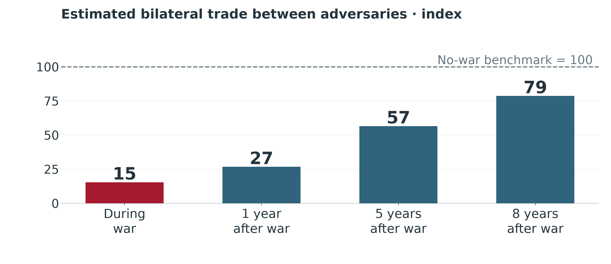

ECON 342 · Week 11 · November 24, 2026
Trade raises
the cost of war
When do the gains from exchange make peaceful settlement more attractive?
10:30–10:42 Gains at risk
10:42–11:03 Bargaining and uncertainty
11:03–11:17 Evidence on disruption
11:17–11:22 Break
11:22–11:40 Evidence on deterrence
11:40–noon Limits, Canada, and synthesis
Trade creates a shared stake in peace
Countries benefit from continuing to trade with each other.
- Gains from cooperation. Specialization, larger markets, and useful inputs make the relationship valuable.
- Losses from fighting. War can interrupt that exchange and destroy part of its future gains.
- An incentive to settle. Leaders who take those losses into account may prefer a concession to the cost of breaking the relationship.
The more both sides expect to lose from a rupture, the stronger their incentive to find a peaceful agreement.
Inspired by Jacques Fontanel’s teaching in Grenoble and his 2014 essay on commerce and peace. Model: Martin, Mayer, and Thoenig (2008). Other stakes and the military balance held fixed.
Our trade models explain what is at risk
| Model | Value put at risk |
|---|---|
| Ricardo and H–O | Specialization gives access to goods at lower relative cost. |
| Krugman | Larger markets support scale and variety. |
| Heterogeneous firms | Exporters build customer relationships and invest in market access. |
| Gravity | Replacing a large, nearby trading partner can be expensive. |
The economic loss includes lost purchasing power and production opportunities, after accounting for replacement suppliers and buyers.
Course synthesis. Gross exports are sales, so a dollar of lost exports cannot be read as a dollar of lost national welfare.
Two claims need two kinds of evidence
1. The cost channel
War disrupts access to valuable markets and goods.
Look for changes in routes, trade, prices, and purchasing power after disruption.
2. The deterrence channel
Anticipating those losses makes agreement more attractive.
Look for changes in conflict when trade opportunities change.
Evidence that war disrupts trade supports the first link. Establishing deterrence also requires evidence about decisions to fight.
A dispute over 100: peace or war
Two countries, A and B, disagree over a divisible prize worth 100.
Agree on a division
A receives x. B receives 100 − x.
For example, x = 55 means 55 for A and 45 for B.
Fight for the prize
Each has a 50% chance of winning all 100. Each pays a direct fighting cost of 10.
If both can receive more than 40 by agreeing, why destroy value by fighting?
Illustrative payoff units, risk-neutral countries, common beliefs, enforceable division. Teaching adaptation of Fearon (1995), pp. 386–389. Human losses are represented abstractly by the fighting cost.
What settlement will both sides accept?
Let LA and LB be each country’s expected net economic loss from disrupted trade if war occurs, in the same payoff units.
| Country | Accept peace if… | Equivalent condition |
|---|---|---|
| A | x ≥ 40 − LA | A gets at least its war payoff. |
| B | 100 − x ≥ 40 − LB | x ≤ 60 + LB. |
Left: minimum A accepts. Right: maximum B accepts for A.
Peacetime trade welfare is subtracted from both options, leaving only the additional loss in war. A larger L means more welfare at risk; all other payoffs are held fixed. Indifference counts as acceptance.
Trade widens the settlement range
[30, 70]
Peaceful settlement range for A’s share, x
Each country’s war payoff: 30. Settlement-range width: 40.
Illustrative assumptions: prize 100; equal winning chances; direct fighting cost 10 each. L measures expected net welfare lost from trade interruption. The slider shows acceptable divisions; it does not assign a probability of war.
What the simple model establishes
- Costlier war: losing trade lowers the payoff from fighting.
- More acceptable settlements: both sides can accept a wider range of divisions.
- An agreement still has to be reached: the countries need information and credible commitments.
With known payoffs and enforceable bargaining, peace was already possible without trade. Explaining war requires explaining why bargaining fails.
The interval describes acceptable agreements; its width is not a probability of peace. Fearon (1995) develops information and commitment explanations for bargaining failure.
Uncertainty can make a risky demand attractive
A makes one offer. B privately knows its fighting cost; A knows only the probabilities. A’s cost stays 10. Initially LA = LB = 0.
| B’s private cost | Probability | B’s war payoff |
|---|---|---|
| Low cost: 10 | 40% | 50 − 10 = 40 |
| High cost: 30 | 60% | 50 − 30 = 20 |
A demands 60: B keeps 40. Both types accept. A gets 60.
A demands 80: B keeps 20. Only the high-cost type accepts. A’s expected payoff is 0.6(80) + 0.4(40) = 64.
A chooses the risky demand: it earns more on average, but the low-cost B fights.
Original teaching example. One take-it-or-leave-it offer; B accepts when indifferent. Expected payoff means probability-weighted average. All numbers are invented.
Trade can change the bargaining choice
Now each country would lose 10 from interrupted trade. A’s war payoff falls to 30; B’s falls to 30 or 10.
| A’s choice | B’s response | A’s payoff |
|---|---|---|
| Demand 70; leave 30 | Both types accept. | 70 for sure. |
| Demand 90; leave 10 | Only the high-cost type accepts. | 0.6(90) + 0.4(30) = 66. |
A now prefers the safe demand. In this example, expected trade losses change the chosen offer and prevent fighting.
Same beliefs, prize, fighting costs, and offer rule as the previous slide. A’s payoff increases between acceptance thresholds, so these are the relevant offers to compare. This is an illustrative mechanism, not an estimated effect.
A formal trade model: Martin, Mayer, and Thoenig
Their model connects trade gains to negotiation under private information.
More to lose with this partner
Greater bilateral dependence can raise the cost of a rupture and reduce escalation after a dispute.
More alternatives elsewhere
Other suppliers and markets can cushion that rupture. Under the model’s conditions, this weakens bilateral deterrence.
Ask which relationship is threatened and how much of its value can be replaced.
Martin, Mayer, and Thoenig (2008), pp. 869–875. The outside-option result depends on how conflict affects trade with third countries. The model treats dispute arrival as given.
Why estimating deterrence is difficult
- Reverse causality: peaceful relations make firms more willing to trade.
- Shared causes: alliances, borders, and institutions affect both trade and conflict.
- Anticipation: firms may withdraw before fighting begins.
A useful comparison changes trade opportunities for reasons separate from the dispute, then asks what happens to conflict.
A quasi-experiment uses outside variation rather than researcher-assigned treatment. Its credibility depends on whether other channels can explain the outcome.
War can cause large, persistent trade losses

The gravity estimates show large trade losses. The plotted lag effects describe a one-year war episode.
Glick and Taylor, February 2005 conference version, Table 4, column 1; 1870–1997. Index = 100ecoefficient. Multi-year wars combine lag effects. Observational panel estimates; trade-flow losses differ from welfare losses. Exact source version.
Suez: a disrupted route provides a comparison
The Suez Canal closed in June 1967 and reopened in June 1975. Some trading pairs faced much longer sea routes than others.
Comparison
Compare trade over time for pairs with large and small predicted route detours. The study excludes combatants and several directly exposed groups.
Assumption
Other shocks must not systematically track the size of those detours. Geography helps construct the comparison.
This study tests the route-disruption link in the cost channel.
Feyrer (2021); author’s replication materials. Exclusions also include oil exporters, some nearby states, and specified contiguous pairs.
The more exposed routes lost more trade


Each line groups trading pairs by the increase in sea distance during closure. Values are adjusted log trade; zero is an adjusted baseline.
Feyrer (2021), Figure 1 reconstructed from replication data: 1,294 pairs, 1958–1984. Pair and year means removed. Visible pre-existing differences deserve attention; the lines are descriptive group paths rather than separate causal estimates. Chart data.
Five-minute break
11:17–11:22
A costly war can still occur.
When we return: can changes in trade opportunities actually change the decision to fight?
Keep the two links separate: disruption creates a loss; anticipation can change a decision.
Atlantic trade and European conflict: the design
Ahsan, Panza, and Song study more than 200 years of European conflict and Atlantic market integration.
| Design element | Meaning |
|---|---|
| Trade measure | How wheat prices transmit between Europe and the New World: a proxy for market integration. |
| Outside variation | Atlantic winds and tropical cyclone activity affect sailing and trade opportunities. |
| Outcome | Onset of conflict within Europe. |
| Key requirement | Weather must affect conflict through trade, rather than through another military channel. |
Ahsan, Panza, and Song (2025), Economic Journal. An instrumental variable uses an outside source of variation to isolate the part of trade used for the comparison. Detailed design also examined in the March 2020 working paper.
Atlantic trade: evidence for a peace mechanism
What the authors find
Greater Atlantic integration reduces estimated intra-European conflict onset. Higher real wages and smaller armies are consistent with a larger opportunity cost of fighting.
What we must scrutinize
Storms could also damage fleets and military capacity directly. Historical European results need care when applied to other places or periods.
This is direct evidence for deterrence under the design’s assumptions. European peace leaves colonial conflict outside the measured outcome.
2025 abstract: a one-standard-deviation increase in trade corresponds to a 0.157-standard-deviation decline in conflict onset. This is not 15.7 percentage points. Final tables were unavailable for this lecture audit, so no precision or confidence interval is claimed.
Modern evidence: bilateral ties and outside options
Martin, Mayer, and Thoenig examine country pairs during 1950–2000.
- Their estimates support opposite effects of bilateral dependence and wider trade openness on militarized disputes.
- Their measured disputes include displays of force, use of force, and war. This outcome is broader than war.
- They use controls, fixed effects, and instruments. Their instruments still require political and geographic exclusion assumptions.
The findings fit the mechanism. The strength of the causal claim depends on the comparison.
Martin, Mayer, and Thoenig (2008), Tables 6–7. GSP access and economic remoteness are instruments; trade preferences can themselves reflect political objectives.
What the evidence supports
| Question | Evidence | Assessment |
|---|---|---|
| Can conflict damage trade? | Glick–Taylor; Suez closure. | Substantial disruption is well supported; welfare losses require additional measurement. |
| Can trade restrain conflict? | Atlantic quasi-experiment; modern bilateral estimates. | Supportive, with identification and scope limits. |
| Does all openness preserve peace? | Substitution and bargaining mechanisms. | The effect depends on the relationship and institutions. |
There is a serious case for trade supporting peace. The evidence warrants a conditional claim.
Why valuable trade can fail to protect peace
| What can fail? | Mechanism |
|---|---|
| The expected loss is small | Trade continues during conflict, or other buyers and suppliers replace it. |
| Information is private | A side makes a tough demand because it cannot observe the opponent’s willingness to fight. |
| Promises lack credibility | An acceptable division today may be revised when power changes tomorrow. |
| Decision-makers value other goals | Citizens’ economic losses may receive less weight than security, territory, or leaders’ own interests. |
Ask which step fails: a large loss, a decision-maker who values it, or a workable agreement.
Mechanisms and limits, rather than a ranking of causes. Fearon (1995); Martin, Mayer, and Thoenig (2008); Thoenig (January 2024). The leaders-versus-citizens distinction is outside our simple model.
Zheng: an agreement must survive rejection incentives
Two rivals privately know how cheaply they can fight. A mediator proposes a division; rejection leads to costly conflict.
Peace that can be implemented
Acceptance works under particular expectations about what rejection would trigger.
Secure peace
Acceptance survives the different conflict expectations allowed by the model.
Trade can increase the value preserved by agreement. The agreement also needs incentives that make both sides accept it.
Charles Z. Zheng (2019), pp. 138–142. The paper is a model of mediation and conflict. The connection to trade is our classroom interpretation.
Canada: preserve gains and make access credible
- Identify what is valuable. North American auto production links market size, specialization, and cross-border inputs.
- Measure replacement costs. Ask how quickly buyers, suppliers, and transport routes could be changed.
- Support credible access. Predictable rules and dispute settlement help preserve the gains at stake.
Diversification can protect Canadian households and firms. It also changes dependence on a particular partner. Evaluate both effects.
Application of earlier course evidence and today’s model. Trade disputes and tariffs are distinct from armed conflict; this framework supplies no forecast of a Canada–US war.
Check the mechanism: what if replacement is easy?
Return to the prize of 100 and a direct fighting cost of 10 each.
- Each side initially expects to lose 10 from disrupted trade. What divisions do both accept?
- Replacement suppliers reduce that loss to 2 each. What is the new range?
- Explain why better resilience can reduce the economic deterrent to this bilateral conflict.
Ungraded discussion. All other payoffs stay fixed. Instructor check: [30,70] becomes [38,62]; interval width falls from 40 to 24. Neither width is a war probability.
A shared stake in peace
Trade makes continued cooperation valuable. War puts that value at risk. Anticipating those losses gives leaders more reason to make concessions and seek agreement.
The mechanism is stronger when both sides expect exchange to continue and the gains would be difficult to replace.
Reaching and maintaining an agreement is what turns that incentive into peace.
Private information, weak commitments, or other objectives can still defeat the incentive.
Sources and optional extensions
- Fearon (1995): bargaining and costly war.
- Martin, Mayer, and Thoenig (2008): trade and escalation.
- Glick and Taylor: war’s trade costs; Feyrer (2021): Suez disruption.
- Ahsan, Panza, and Song (2025): Atlantic trade and European conflict.
- Zheng (2019): conditions for peace.
- Thoenig (January 2024): structural trade and bargaining toolkit.
Optional lab: Panama market-access experiment. It computes trade and real income; a conflict prediction would require a bargaining model and additional evidence.